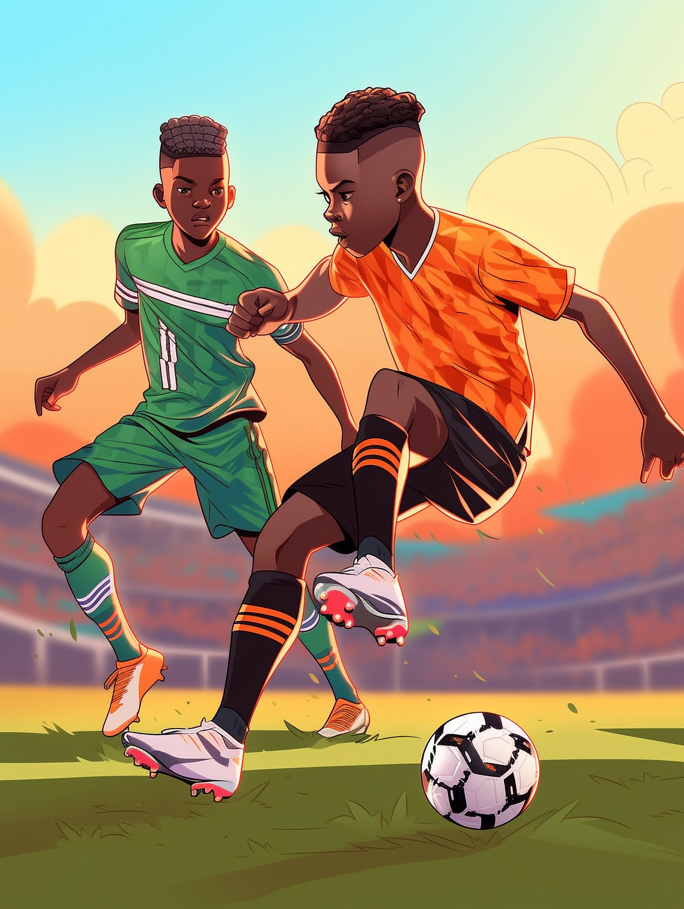
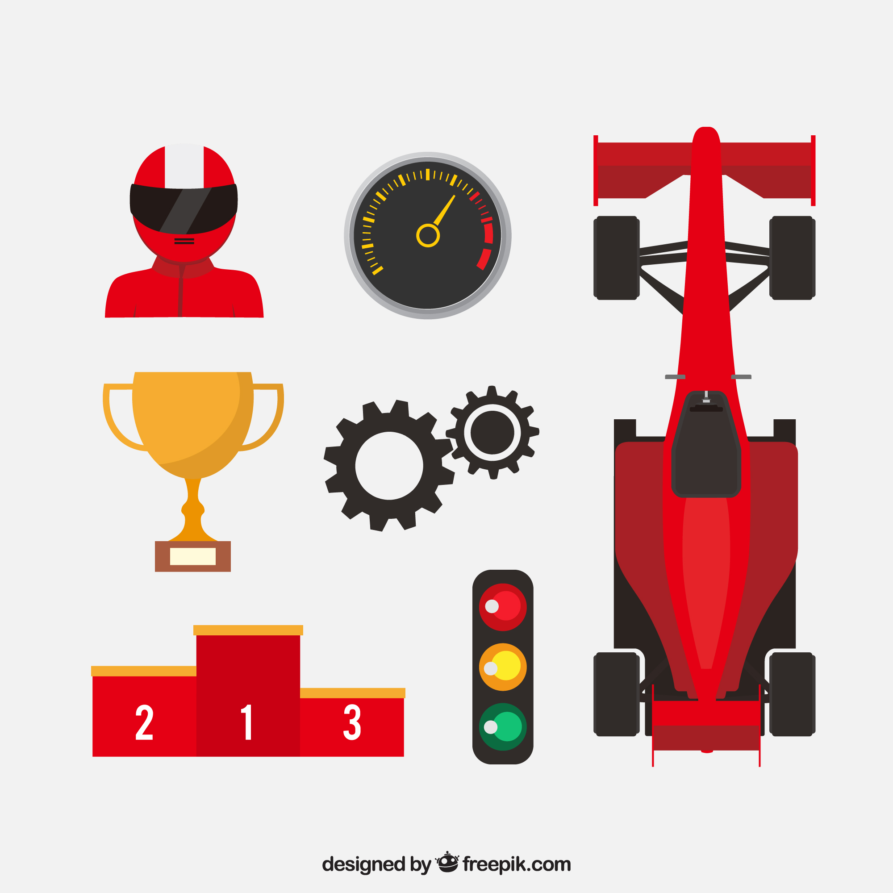
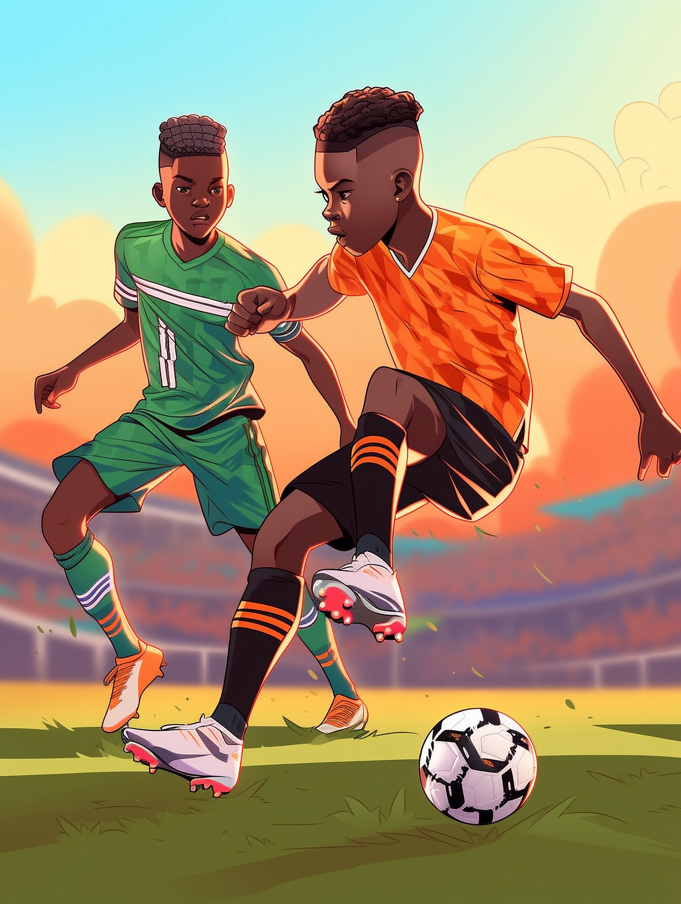
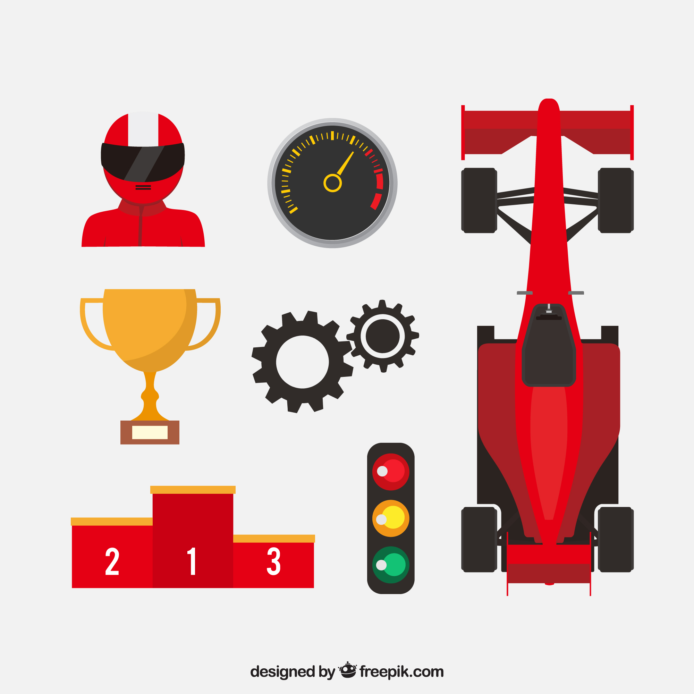

Welcome to My Personal Website
My name is Victor Ngigi and I joined moringa in February, I have learnt various things which I would like to display on this website.
My name is Victor Ngigi and I joined moringa in February, I have learnt various things which I would like to display on this website.


 



I was born in Kajiado County, Ongata Rongai and now live in Kasarani, Mirema. I am a novice software developer at Moringa School, learning how to code, with a strong focus on front-end development and styling.
I am a huge fan of Manchester United.
Watching matches and celebrating victories with friends is a great way to unwind after a long week.
In Formula One, I passionately support Ferrari. The blend of cutting-edge technology, high-speed thrills, and tactical brilliance keeps me on the edge of my seat.
My favorite driver, Lewis Hamilton, who recently joined Ferrari, is a true icon. His achievements and determination inspire me to push the limits in my own pursuits.
Currently a student at Moringa School, I am learning the ins and outs of coding. My goal is to excel as a front-end developer and use my skills to provide a secure future for my family.
In addition to my training at Moringa, I am pursuing a degree in Applied Computing at USIU.
Professionally, I have honed my skills by working at several tech shops. Most recently,One World Technology Ltd.